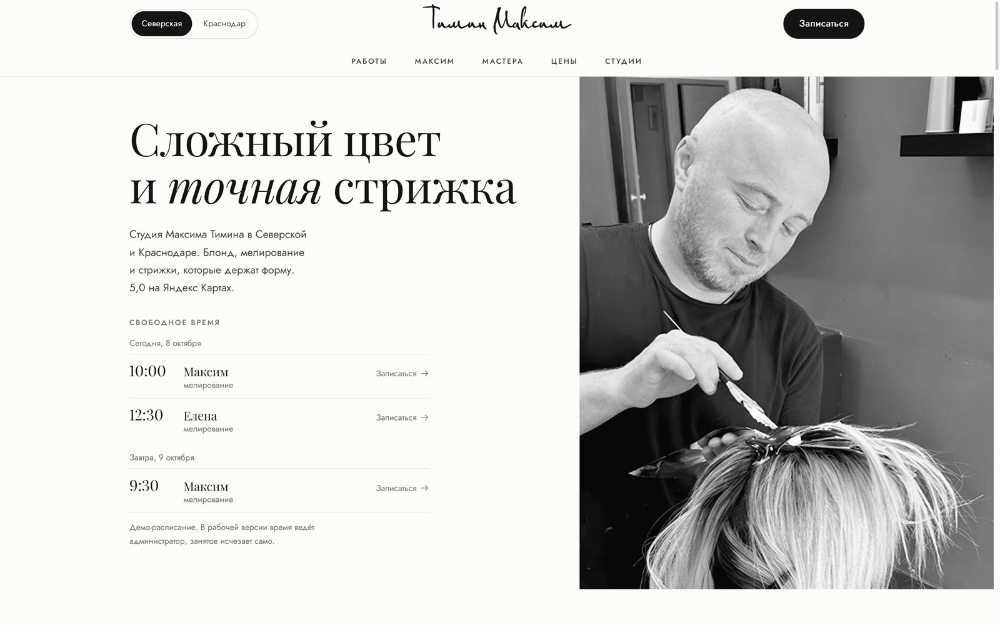
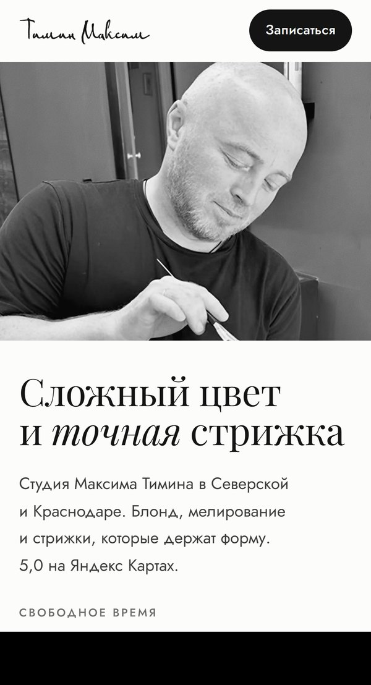
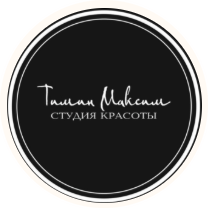
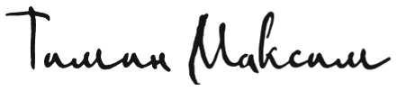

Сайт, запись в Telegram и порядок на картах. Администратору приходит готовая заявка, а за сайт вы платите, когда он заработает на вашем адресе.


Кнопка «Сайт» на Яндексе ведёт на taplink с ошибками в кнопках.
Сайт студии: мастера, цены, работы «до и после» и запись на свободное время. Он открыт для поиска в Яндексе и Google.
Свободное время выкладывается картинкой, запись идёт в переписке.
Клиентка нажимает на окно и выбирает услугу, администратору приходит готовая заявка.
На Яндексе и в 2ГИС разные цены и адрес, в октябре висит июньская акция.
Один прайс и один адрес на всех площадках.
По запросу «Тимин Максим» в 2ГИС под вашими карточками реклама соседей.
В ваших карточках ссылка на сайт с записью.
Всё на сайте собрано из вашего материала: логотипа, фото и цен.


Логотип студии — рукописная надпись в чёрном круге. На стойке администратора он читается, а на аватарке в Telegram круг сжимается до размера ногтя, и надпись уже не разобрать. Мы взяли надпись из логотипа, перевели её в вектор и сделали крупной, при открытии сайта она пишется пером. Круг остался в форме кнопок: всё, на что нажимают, на сайте круглое.
Фото студии и мастеров чёрно-белые, цвет только в волосах: взгляд сразу идёт к результату.
Фото работ взяты из ваших карточек и канала. Мы увеличили их в четыре раза без перекраски и выровняли пары «до и после» по масштабу, чтобы их было честно сравнивать.
Сайт спроектирован под двух клиенток: новую, которая выбирает мастера, и постоянную, которой нужно свободное время своего мастера.
95 000 ₽
Всё сразу, первый месяц канал ведём мы.
65 000 ₽
Сайт и запись в Telegram, канал дальше ведёте сами.
45 000 ₽
Только сайт и порядок на картах.
Администратор добавляет свободное окно в боте, и в канале появляется пост: день, время, мастер. Клиентка нажимает на время, выбирает услугу и оставляет номер.
Заявка приходит администратору с кнопками «Подтвердить» и «Отказать», занятое время в посте зачёркивается само. Накануне бот напоминает клиентке о записи, отменить её можно кнопкой.
Постоянным клиенткам это удобно с первого дня: они видят свободное время своего мастера и записываются сами. У администратора уходит ручная работа: собирать окна в картинки, подтверждать запись в переписке, напоминать накануне.
Серия «История студии» по интервью в «Комсомольской правде», рубрики «Правила Максима» и «Спросите Максима». Первый месяц пишем и публикуем сами.
45 000 ₽
Оплата, когда сайт заработает на вашем адресе. В «Витрине» это вся сумма.
Остаток: половина при старте, половина при запуске. В «Витрине и записи» это 10 000 ₽ при старте и 10 000 ₽ при запуске бота, в «Студии под ключ» — 25 000 ₽ и 25 000 ₽.
Переводом, на каждую оплату чек самозанятого. Домен оформляется на студию и остаётся вашим, оплата регистратору напрямую, обычно до 1 000 ₽ в год.
Боту нужен сервер, сайту и картам — правки. Два варианта, отказаться можно в любой месяц: сайт продолжит работать, бот остановится.
5 000 ₽ в месяц
Сервер для бота, хостинг, правки цен, фото и мастеров на сайте и картах. Раз в месяц отчёт по записям через бота.
20 000 ₽ в месяц
Всё из обслуживания и 12 постов в месяц в канале. От студии нужно 2–3 фото работ в неделю.
В «Студии под ключ» первый месяц сопровождения уже включён. Для «Витрины» обслуживание по желанию: сайт работает и без него.
Всё делается удалённо.
Новых клиенток приводят карты и сайт: там студию ищут по имени и по услуге. Сложное окрашивание у вас стоит от 15 000 ₽, коррекция раз в 6–8 месяцев. Одна новая постоянная клиентка приносит около 30 000 ₽ в год, и четырёх таких хватает, чтобы «Студия под ключ» окупилась за год.
Свободные окна есть даже у Максима: в канале на 13 октября их три.
Для сравнения: веб-студии берут за сайт салона с онлайн-записью 100–160 тыс. ₽, за ведение Telegram-канала — от 25 тыс. ₽ в месяц.
Ответьте в WhatsApp на сообщение с этой ссылкой: какой вариант вам ближе или что осталось непонятным. Если стартовать в октябре, к предновогоднему сезону запись уже будет работать.
Михаил · сайты и онлайн-запись для салонов
Цены рынка — по открытым прайсам веб-студий на 2026 год (Проект А2, VEBS, Magnetto). На демо-сайте свободное время показано для примера, цены взяты с Яндекс Карт и из вашего Telegram-канала, перед запуском сверим их с вами. Страница закрыта от поисковиков и открывается только по ссылке.